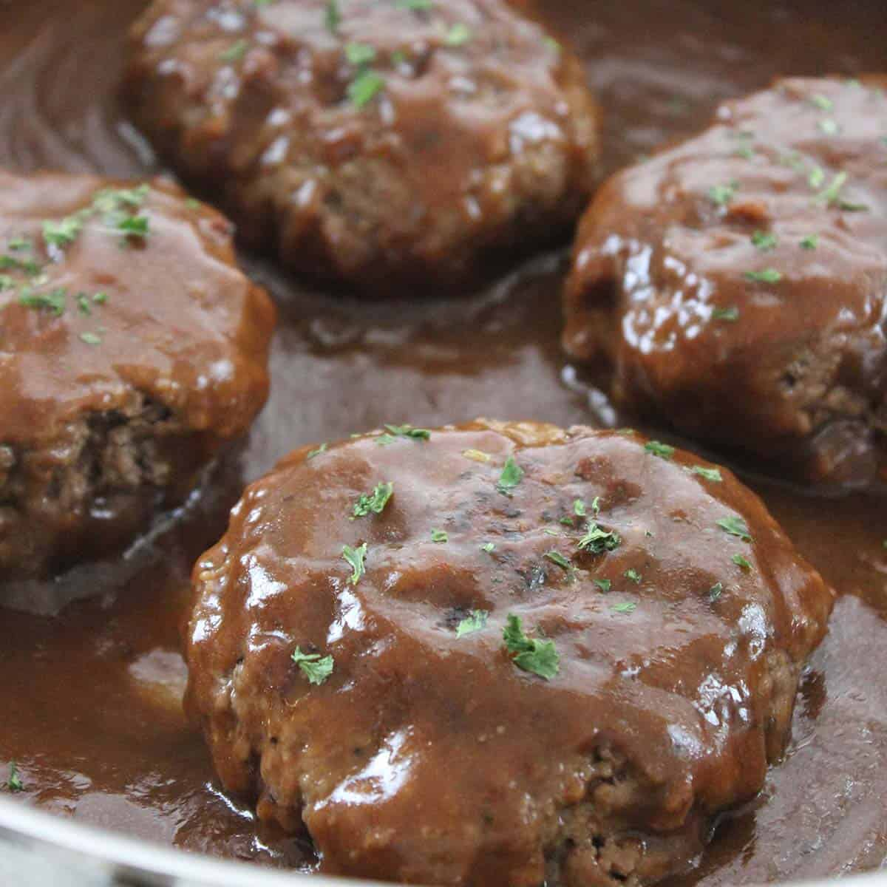

Lasagna Recipes
Lasagna Recipes

Ingredients
- Mozzarella
- Ricotta Cheese
- Spices
- Pasta Sauce
- Beef & Sausage
- Egg
- Parsleyy
- Lasagna
- Onion
- Tomato Paste
- Parmesan
Steps
- Boil pasta: In a large pot of salted water boil lasagna noodles
- Prepare meat sauce: Cook sausage and beef with onion and garlic. Drain well, add the pasta sauce
- Combine cheese mixture: Stir the cheese mixture together in a bowl.
- Layer & bake: Layer the meat sauce and cheese mixture with lasagna noodles and bake until the top of the lasagna is golden brown.